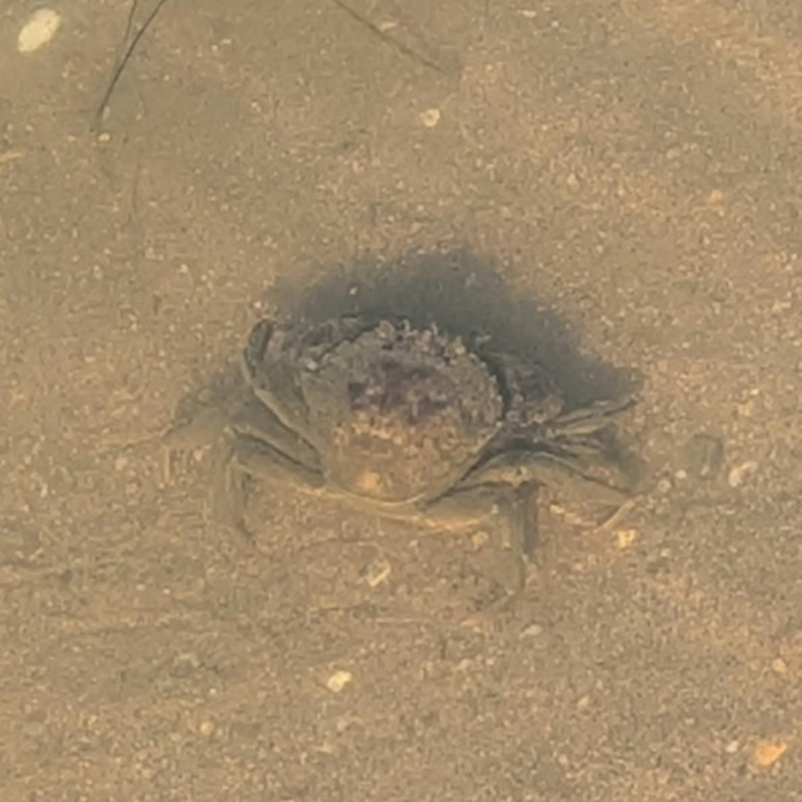

Crabe Vert de Méditerranée
Carcinus aestuarii
Le Crabe Vert de Méditerranée est un petit crabe qui vit sur les côtes mediterranéennes, surtout dans les lagunes litorales comme l'Etant de Thau en france. Il est très proche de son cousin de l'Atlantique (Carcinus maenas)
Informations scientifiques
| Nom scientifique | Carcinus aestuarii |
|---|---|
| Nom commun | Crabe Vert de Méditerranée |
| Famille | Carcinidae |
| Infra-Ordre | Brachyura |
| Ordre | Decapoda |
| Classe | Malacostraca |
| Habitat | Lagunes litorales et fonds vaseux |
| Répartition | Méditerranée et Mer Noire |
| Profondeur | Jusqu'à 20 m |
| Taille | 8 cm de carapace |
| Alimentation | algues, mollusques et charognard |
Description
Reconnaissable à ses longues pattes et à sa silhouette élancée, la Paramole de Cuvier possède une particularité étonnante : elle transporte fréquemment des éponges, des ascidies ou d'autres organismes sur son dos grâce à ses deux dernières paires de pattes modifiées.
Ce camouflage naturel lui permet de se protéger des prédateurs dans les grands fonds marins.
Espèce principalement nocturne, elle se nourrit de petits invertébrés, de poissons morts et de divers débris organiques présents sur le fond.